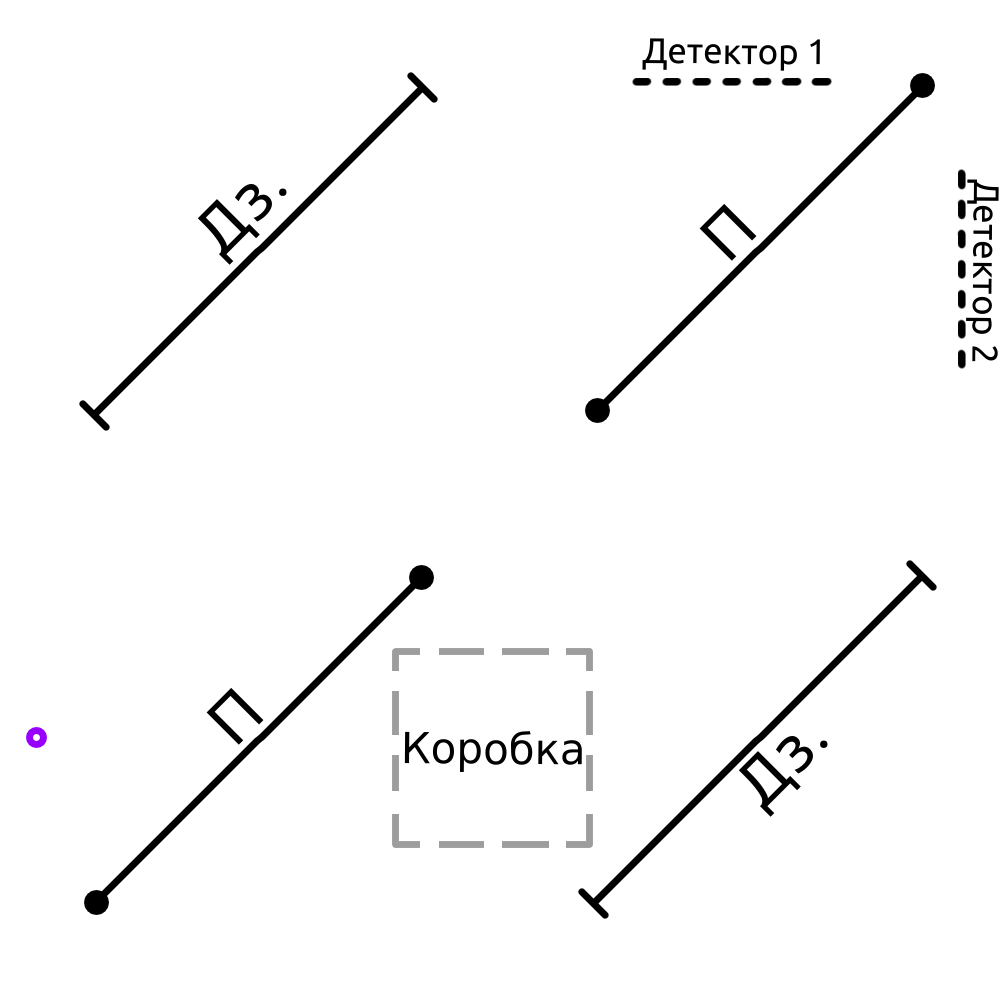
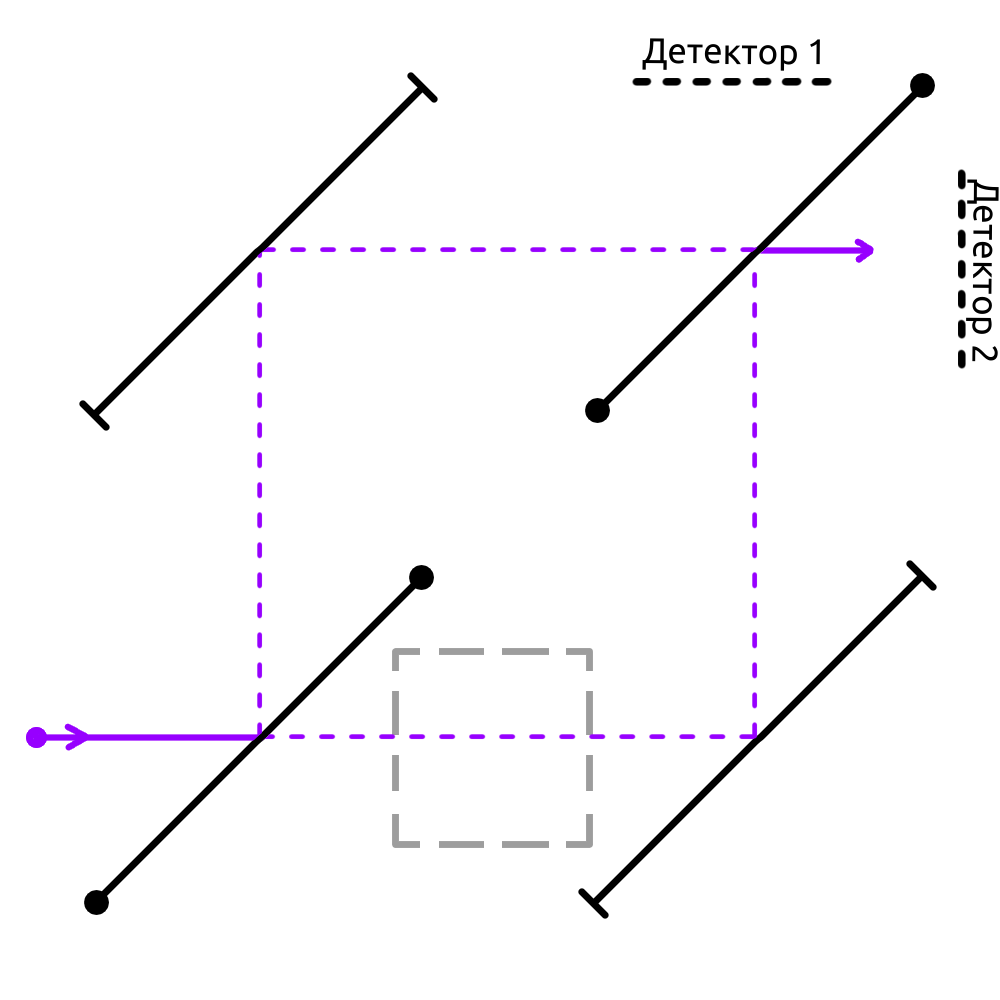
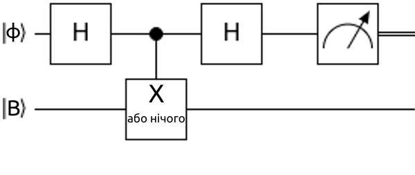

Суперпозиція та Квантовий Сапер
Мета цієї короткої нотатки — допомогти читачеві побудувати інтуїтивне розуміння станів квантової суперпозиції. За основу було взято чудове англомовне відео. Ми поговоримо про те як "грати в квантового сапера" або як побудувати квантовий детектор надчутливих бомб. Сподіваюся, звучить інтригуюче.
Постановка задачі
Уявімо, що в нас є зачинена коробка. У цій коробці з імовірністю 0.5 (тобто 50%) є бомба. Бомба настільки чутлива, що вибухне від одного фотону, тобто будь-яка дія з коробкою призведе до вибуху, якщо там є бомба. Наша задача — встановити, чи є бомба в коробці й не підірватися. Очевидно, класичного розв'язку задача не має, це просто здається неможливим (і так і є).
Квантова фізика приходить на допомогу
Скориставшись певними принципами квантової механіки, ми можемо підвищити свої шанси не підірватися й дізнатися чи є там бомба. Ми акуратно побудуємо навколо робочої області квантовий детектор бомб:
На малюнку 1 "Дз." позначає ідеальні квантові дзеркала, що просто відбивають промені світла, "П" — спеціяльні пристрої, які відбивають або пропускають фотон з імовірністю 0.5, переводячи його в стан суперпозиції, де він частково відбитий і частково пропущений. Фіолетовим позначено місце, з якого ми запустимо фотон.
Погляньмо, що станеться, коли ми запустимо фотон у нашому детекторі без коробки (припускаємо, що те саме відбудеться, в реальному випадку, якщо коробка порожня). У такому випадку на обох можливих шляхах фотона після першого пристрою не буде нічого, що заважає переміщенню чи може спричинити колапс. Фотон (в обох частинах свого стану суперпозиції) відбивається від дзеркал і знову з'єднується в другому пристрої, після чого стовідсотково опиняється в другому детекторі. Це перший випадок, імовірність якого 0.5 (бо така імовірність не мати бомбу в коробці за умовою).
Якщо в коробці таки є бомба, то вона буде на шляху одної з "частин" цього фотона в суперпозиції. Бомба — не квантовий, а класичний об'єкт, отже вона спричинить вимірювання фотона при зіткненні. Можливо ви чули про ефект спостерігача, де його присутність як класичного об'єкта впливає на поведінку квантових систем. Власне, при зіткненні з чимось класичним (бомбою) наш квантовий стан фотона у суперпозиції має, що називається, колапсувати до якогось одного класичного стану, що входили до стану суперпозиції. У нашого фотона є 2 таких можливих класичних стани: відбитий першим пристроєм та пропущений першим пристроєм, до обох з цих станів він колапсує з рівною ймовірністю, адже ми обрали симетричний пристрій. Власне, з цього й випливає два можливих випадки, коли в коробці є бомба: фотон колапсує до першого чи до другого класичного стану випадково:
У випадку, коли фотон обирає нижній класичний шлях (малюнок 4), бомба точно підривається. Імовірність цього 0.25. У другому випадку (див. малюнок 3), імовірність якого теж 0.25, ми побачимо фотон на детекторах 1 та 2 з рівною ймовірністю. Так, є певна імовірність \(0.5 \times 0.25 = 0.125\) побачити фотон у детекторі 2, при тому, що бомба буде в коробці, та це вже краще за нічого. Якщо ми побачимо фотон у детекторі 1, то можемо гарантувати, що бомба в коробці, при тому ми не підірвалися — ура! Задачка на ймовірність: порахуйте, яка ймовірність того, що бомба все ж таки є в коробці, якщо ми вже точно побачили фотон у другому детекторі.
Насправді ж, ми можемо замість другого детектора транслювати фотон назад до початкового положення й повторювати алгоритм декілька разів. Це збільшуватиме шанс розпізнати бомбу.
Квантова схема
Для тих, хто вже трохи розбирається в квантових обчисленнях, пропоную той самий алгоритм у вигляді квантової схеми для квантового комп'ютеру. Тут можна побачити, як застосовувати квантові комп'ютери для симуляції подібних квантових ситуацій. Якщо ви ще з таким не знайомі, то запрошую на іншу сторінку.
При "перекладі на мову квантових схем" наш апарат для переходу до стану суперпозиції стане звичайним ґейтом Адамара \(\hat{H}\), а бомбу ми закодуємо через \(\hat{CX}\), якщо вона є (якщо її немає, то ніяк і не кодуємо):
Верхній кубіт тут кодує стан фотона, а нижній - бомби.